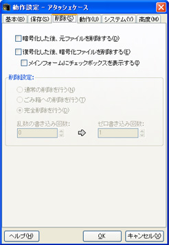

アタッシェケースで暗号/復号化した際に、元ファイルを削除するかどうか、またその削除方法についての設定を行えます。

- 暗号／復号化した後、元ファイルを削除する
チェックすると、処理を行った後に、ファイルを削除します。具体的な削除方法については、以下の項目のいずれかを選択します。
- 通常削除を行う
アタッシェケースの独自機能である「完全削除」を行わず、通常のファイルと同じく削除します。
ただし、Windowsの「ごみ箱」への削除ではありません。ややこしいですが、Windowsで言うところの完全削除となります。ご注意ください。
- インフォームにチェックボックスを表示する
チェックを入れると、メインウィンドウに「削除」のチェックボックスが表示されます。
ファイルを暗号/復号化するときに、削除するかどうかを選択できます。
- ごみ箱への削除を行う
Windowsのごみ箱への通常削除を行います。
ただし、メッセージでの問い合わせは行いませんので、即座に、ごみ箱行きとなります（^^;
- 完全削除を行う
アタッシェケース独自の「完全削除」を行います。ファイルを暗号化した際に、市販のユーティリティソフトなどによって、元ファイルを復活されないように削除することができます。「完全」の度合い（これもおかしな言い方ですが…（^^;））は、以下で設定することができます。
- 乱数の書き込み回数（0〜99）
ファイルを乱数（でたらめな数値）で、埋め尽くして上書きします。
それを何度繰り返すかを指定できます。0にすると行いません。
- ゼロ書き込み回数（0〜99）
乱数を書き込んだ後に、ゼロで埋め尽くして上書きします。
それを何度繰り返すかを指定できます。0にすると行いません。
処理するファイルサイズが大きく、また回数を多くすれば多くするほど、時間がかかります。基本的に完全削除することは難しいので（→元ファイルの削除方法について）、あまり神経質になる必要はないでしょう。初期設定の値で十分だと思います。万全を期したい場合は、市販の削除ユーティリティソフトを使うことをお勧めします。
Created with the Personal Edition of HelpNDoc: Easy CHM and documentation editor